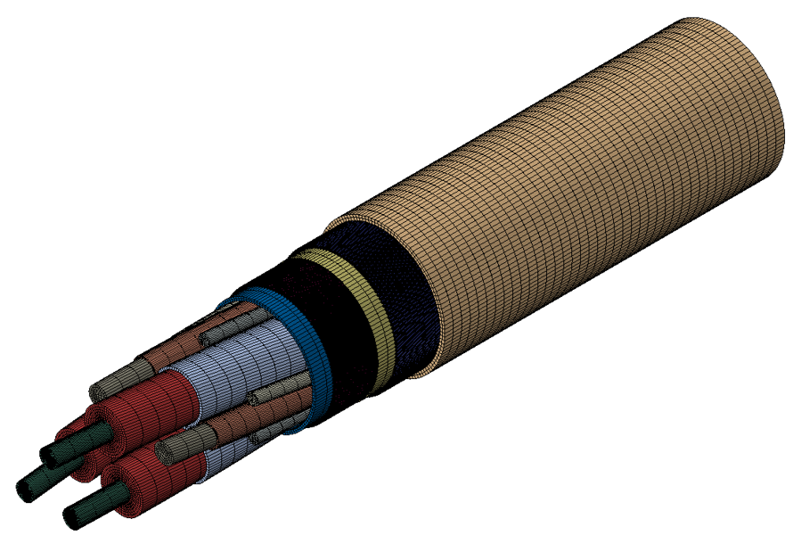

Research
Coverage path planning (CPP) for USV-assisted coastal bathymetric survey
Featuring agile operational ability and low financial costs, unmanned surface vehicles are a desirable tool to perform bathymetric mapping for coastal regions. However, the CPP problem for bathymetry remains an ongoing challenge due to its NP-hard feature, conflicting objectives, and complex ocean environments. This research aims to design effective mathematical models and solvers to address these challenges. We use knowledge from remote sensing, optimization, robotics, and marine engineering to develop algorithms for optimal solutions. Numerical simulations and lake trials are performed to validate the effectiveness in practical applications.
